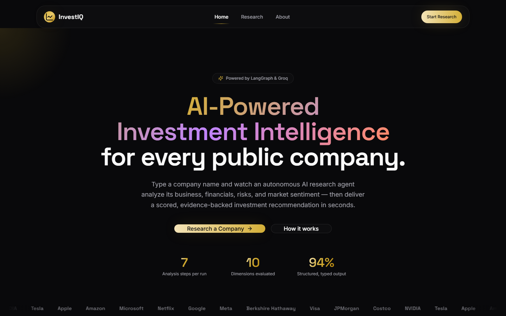
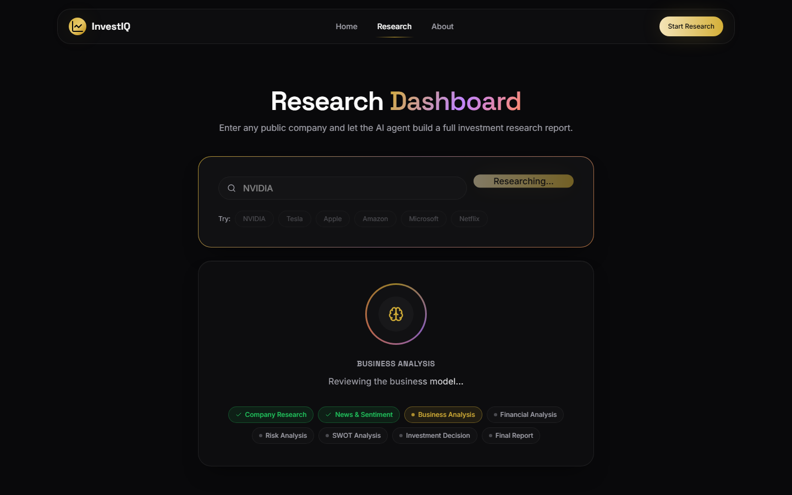
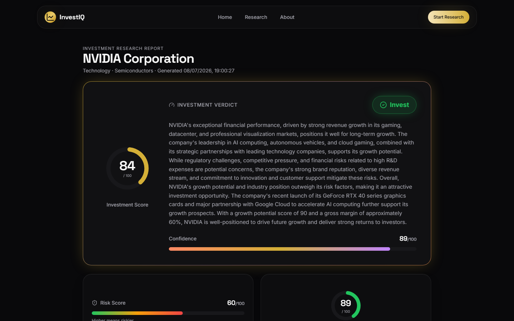
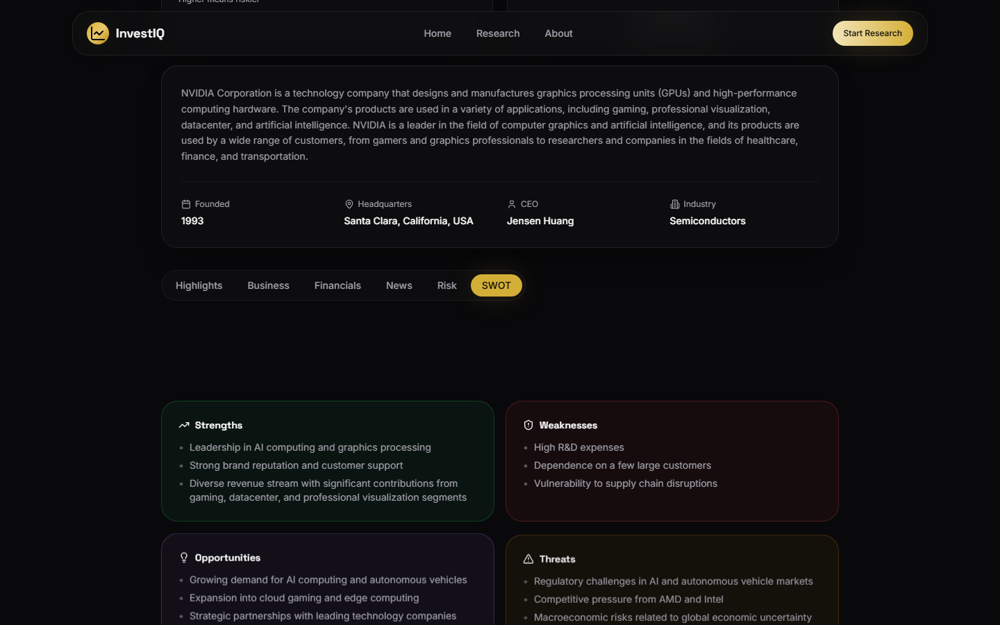

Real output from the deployed InvestIQ agent (Groq / Llama 3.3 70B), captured during live testing — not hand-written or mocked. Each run took roughly 8-12 seconds end-to-end across all 8 LangGraph nodes.

The landing page hero, with the animated gold/purple/coral headline and live stats.

Captured mid-run on a real NVIDIA query — the pulsing gradient orb and step tracker update live as each LangGraph node completes.

Investment Score 84, Confidence 89 — real Groq output, not mocked.

Strengths / Weaknesses / Opportunities / Threats, generated from the same run.
Recommendation: Invest — Investment Score 85 · Confidence 90 · Risk 60 · Growth 80
Apple Inc. (founded 1976, Cupertino, CA, CEO Tim Cook) — Technology / Consumer Electronics. Designs, manufactures, and markets consumer electronics, software, and online services (iPhone, Mac, iPad, Apple Watch, AirPods) with a tightly integrated hardware/software ecosystem.
Revenue primarily from hardware sales, plus a fast-growing services segment (Apple Music, Apple TV+, iCloud) and App Store commissions. Ecosystem lock-in and premium pricing drive high margins.
Revenue growing ~10-15% YoY, net margin ~20-25%. Growth driven by the expanding services segment, wearables, and emerging-market penetration.
Regulatory scrutiny/antitrust risk, competitive pressure from Samsung/Huawei/Google, high R&D spend, global supply chain exposure.
Strong brand loyalty, a diversified and growing product/services portfolio, and consistent double-digit revenue growth outweigh regulatory and competitive risk — hence an Invest call with high (90/100) confidence.
Recommendation: Invest — Investment Score 80 · Confidence 85 · Risk 60 · Growth 90
Tesla, Inc. (founded 2003, Austin, TX, CEO Elon Musk) — Technology / Electric Vehicles and Clean Energy. Designs, manufactures, and sells EVs, solar power systems, and energy storage products.
~90% of revenue from vehicle sales (Model S/3/X/Y); remaining from energy storage (Powerwall/Powerpack), regulatory credit sales, Supercharger network, and subscription/software services (recurring revenue).
Revenue growing ~20% YoY, consecutive profitable quarters (~$1.1B net income in the modeled quarter). Growth driven by Model 3/Y demand, international expansion, and autonomous-driving investment.
Regulatory dependency on EV incentives, intensifying competition (GM, Volkswagen, Nissan, Rivian, Lucid), high capex/R&D, supply chain disruption risk, macroeconomic/trade-policy exposure.
Market leadership, a software-centric moat, and ~20% YoY revenue growth support an Invest call, tempered to 85/100 confidence by high R&D spend and regulatory dependency on EV incentives.
src/lib/ai/schemas.ts via withStructuredOutput, so they're always present and always in range.src/lib/ai/model.ts) to keep runs fairly consistent, but LLM output is never bit-for-bit deterministic.